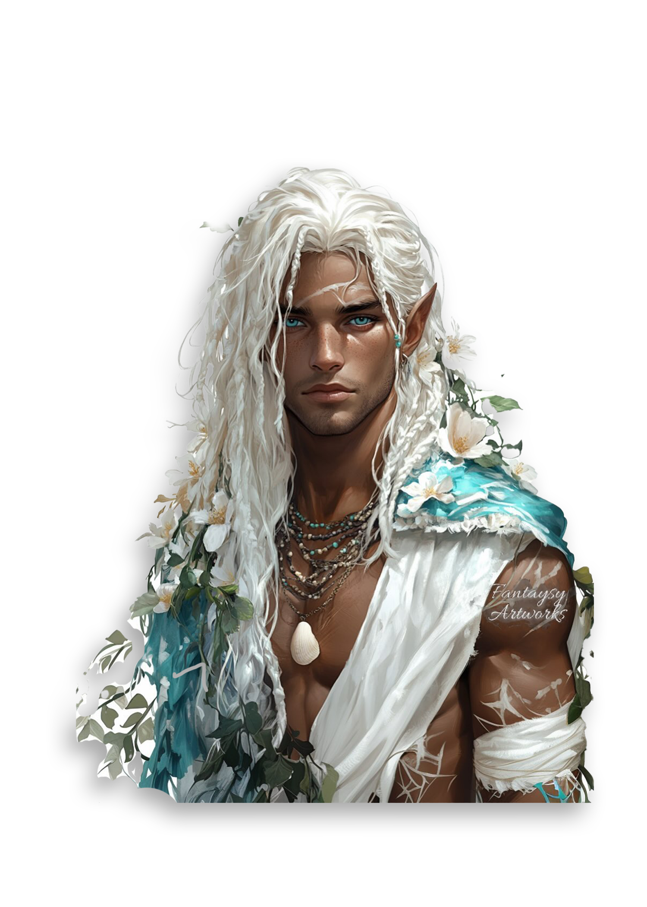
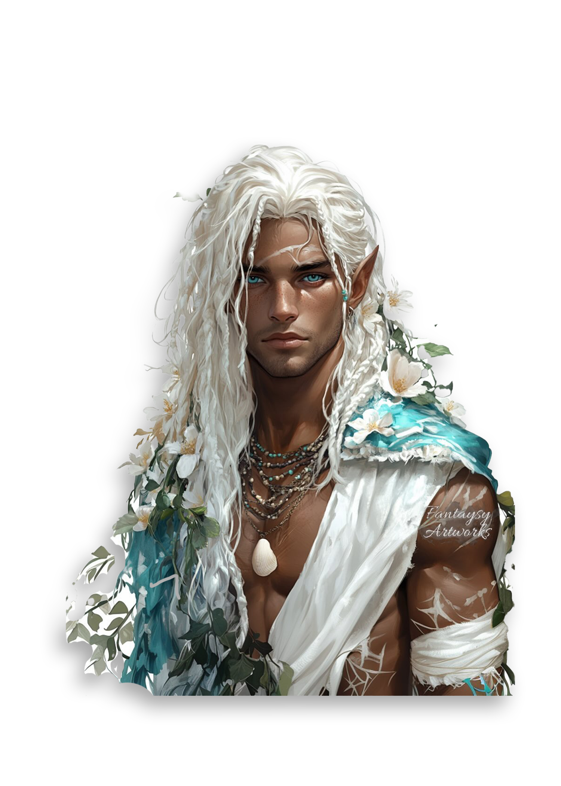
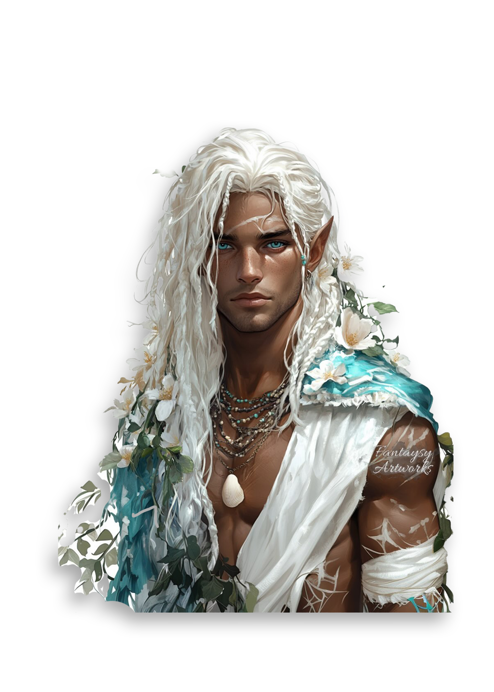
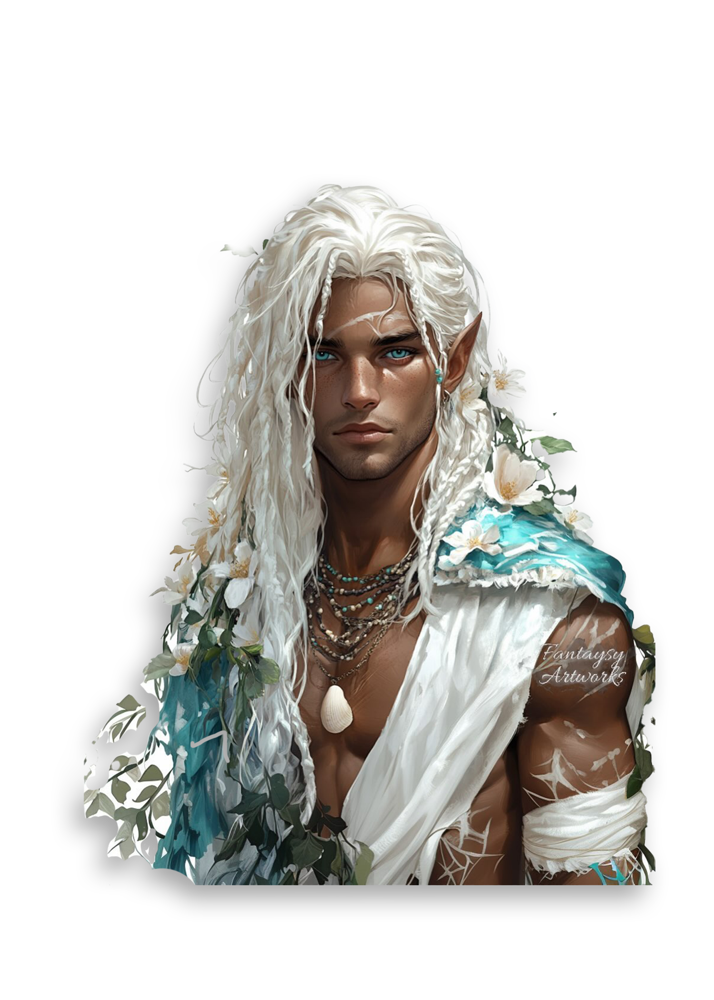

“ Tarquin was summer incarnate in turquoise and gold, bits of emerald shining at his buttons and fingers. A crown of sapphire and white gold fashioned like cresting waves sat atop his seafoam-colored hair—so exquisite that I often caught myself staring at it. ”
–Feyre Archeron, A Court of Mist and Fury
The Summer Court is one of the seven Courts of Prythian and one of the four Seasonal Courts. Tarquin is the High Lord of the Summer Court and the youngest of all the High Lords.
The Summer Court is bordered to south by the Spring Court. Its eastern border is the Autumn Court, and the northern border is the Winter Court.
The Summer Court boasts four cities, one of which is the city of Adriata where the High Lord of Summer spends the last weeks of winter and first weeks of spring. A palace is built atop a mountain-island in the heart of a half-moon bay. The city circles the island on three sides and spreads toward the sparkling sea.